读得懂，说不出
论文里的好句子读完就散了，轮到自己讲，只剩下 “This paper is about…”。Prism 把论文直接变成一份结构完整的 3 分钟讲述稿，并给出示范音。
local-first · windows · MIT
Prism 把同一篇论文拆成读、写、说三条可练习的线：从 Zotero 取出文献，生成 3 分钟讲述稿，听示范音、录自己的版本、拿到可比较的复盘，网页上划过的词也顺手落进 Anki。一个窗口，一条闭环，数据全部留在本机。
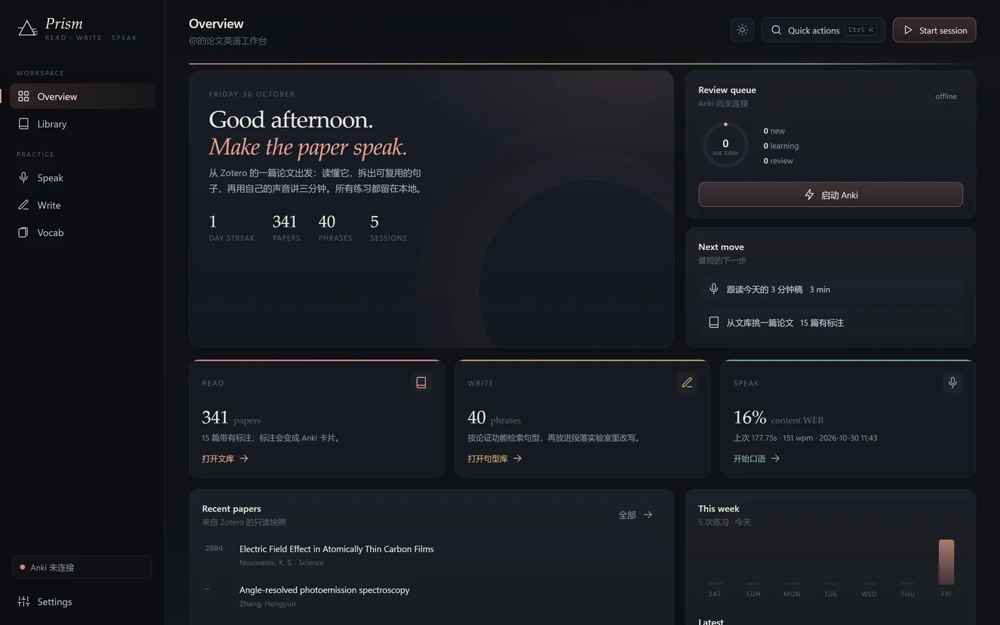
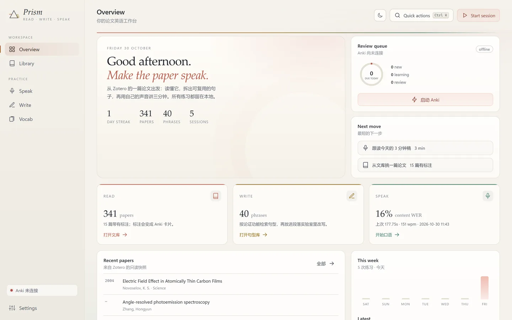
论文里的好句子读完就散了，轮到自己讲，只剩下 “This paper is about…”。Prism 把论文直接变成一份结构完整的 3 分钟讲述稿，并给出示范音。
模板、语法检查、润色工具各管一段，复制粘贴来回切换。Prism 按论证功能检索 40 条 Phrasebank 句型，点一下就插进你正在写的段落。
生词散落在网页、PDF 和四个标签页里，复习在 Anki，口语又是另一个软件。Prism 用一个本机词典接住浏览器里划过的词，也把 Zotero 标注一键导出成卡片，全部记进同一份进度。
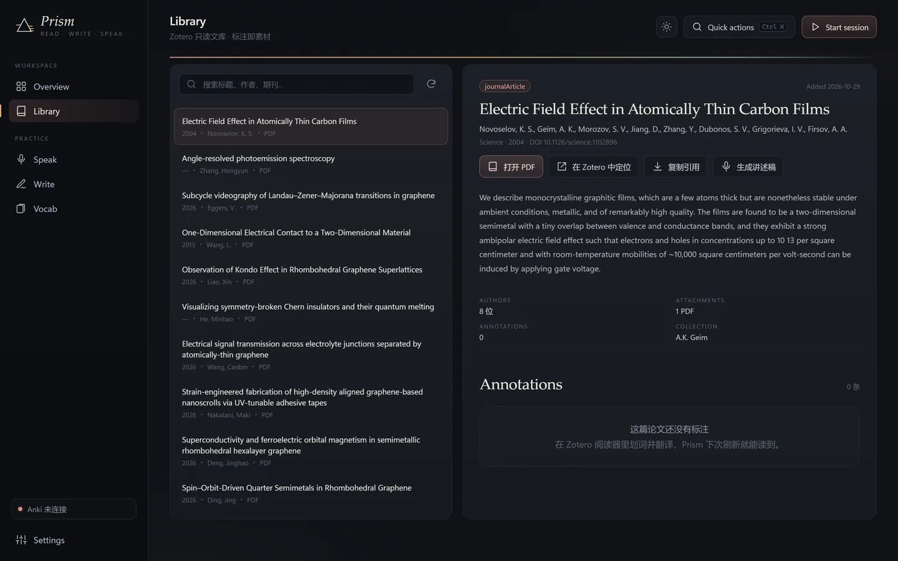
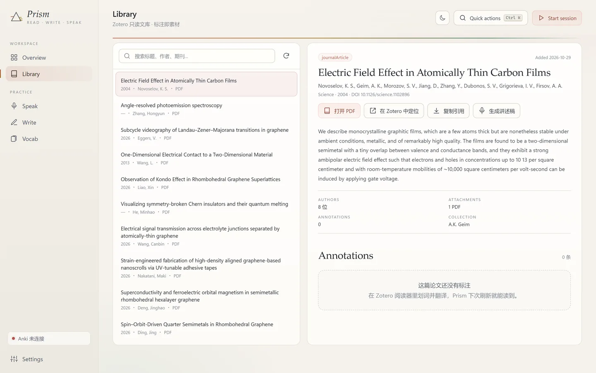
搜索 Zotero 文库，看摘要、标签与标注；打开 PDF、定位到 Zotero；点 生成讲述稿 得到一份带术语标记的稿子。
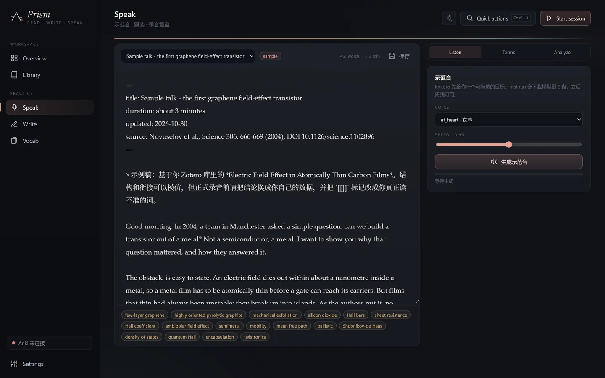
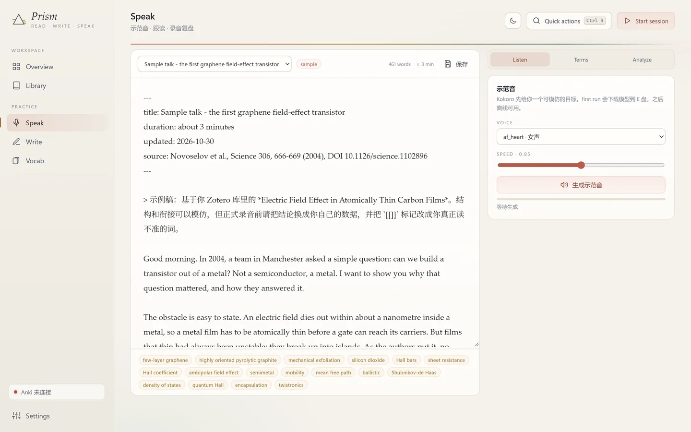
Kokoro 合成示范音（CPU 可跑），术语自动套用读法表；Terms 面板给出 YouGlish 语境链接；上传录音进入复盘。
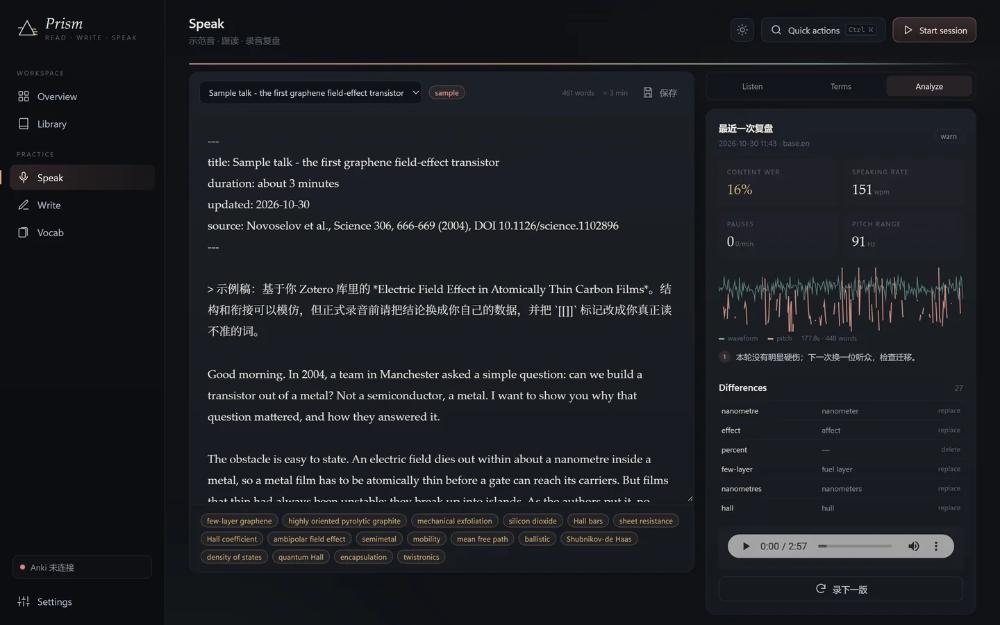
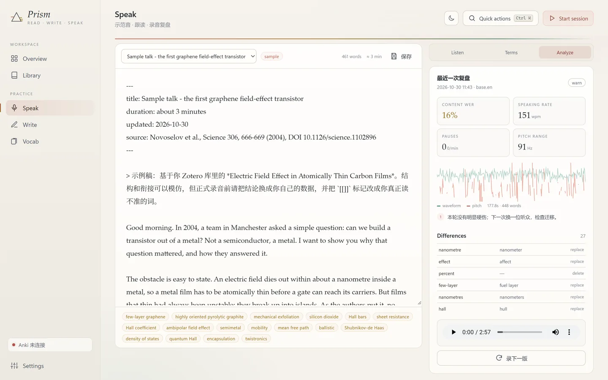
Whisper 转写 → 与稿子逐词对齐 → Praat 测音高、强度与停顿，给出内容词 WER、波形与最值得改的 3 个动作。
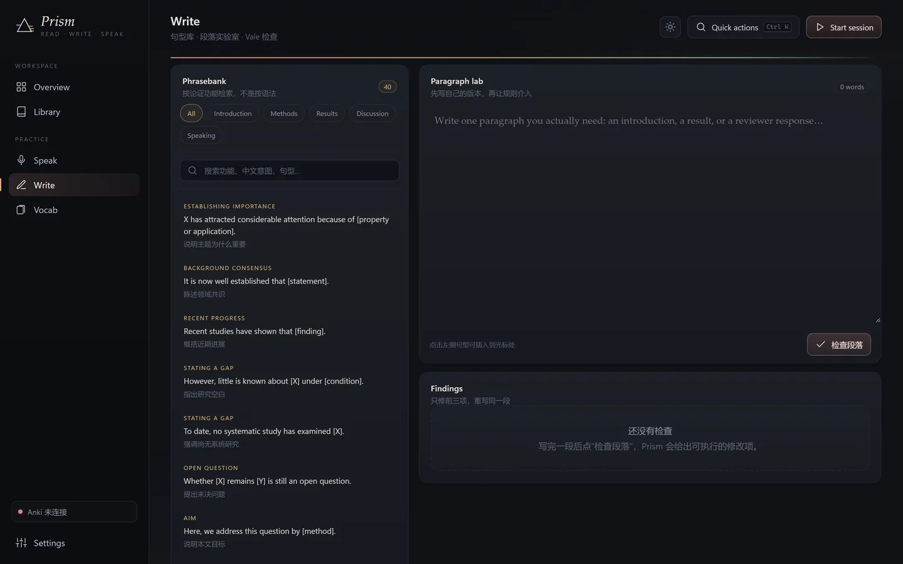
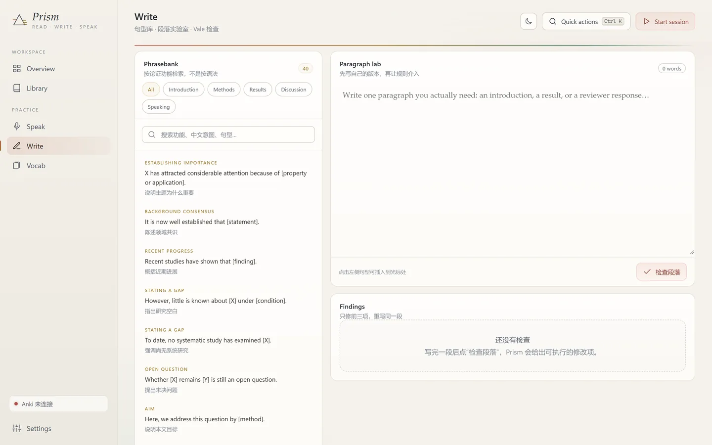
按 Introduction / Methods / Results / Discussion 检索句型，插进段落实验室，再用 Vale 与内置规则给出可执行的修改项。
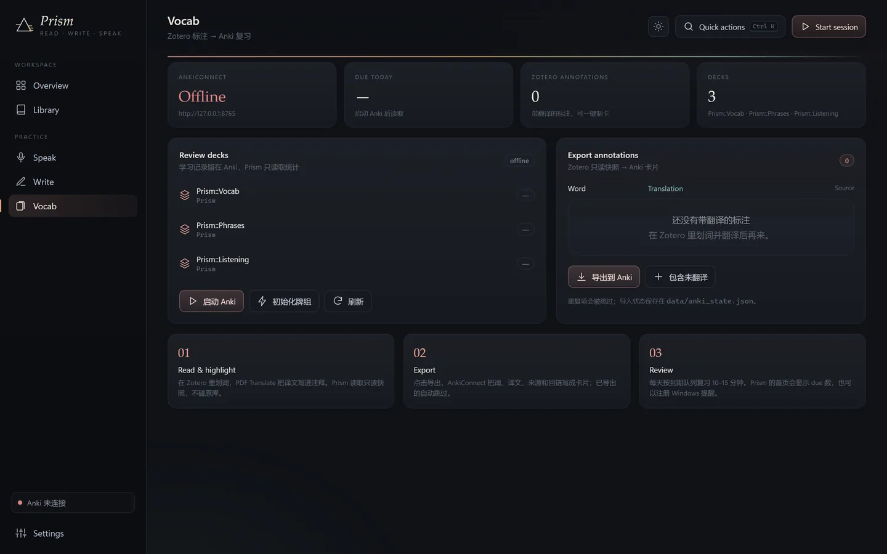
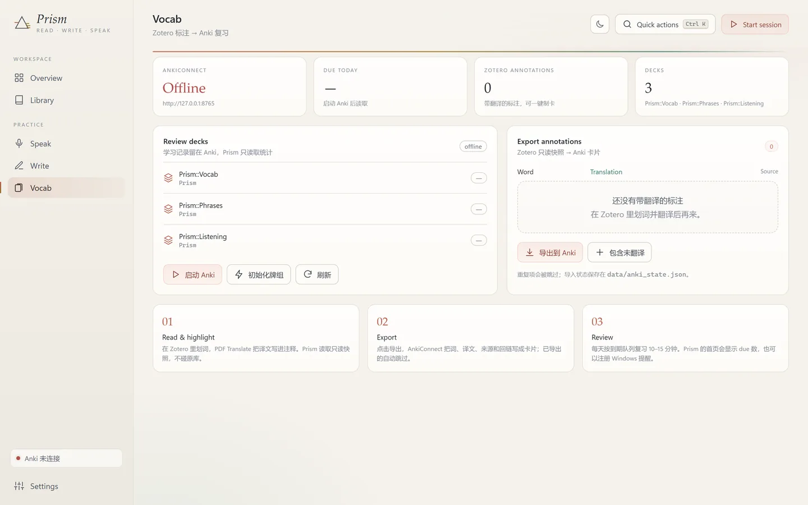
浏览器划来的词先进收件箱，勾一下才写进 Prism::Vocab；Zotero 里带翻译的标注同样一键导出。首页显示今日到期数，第二天照常复习。
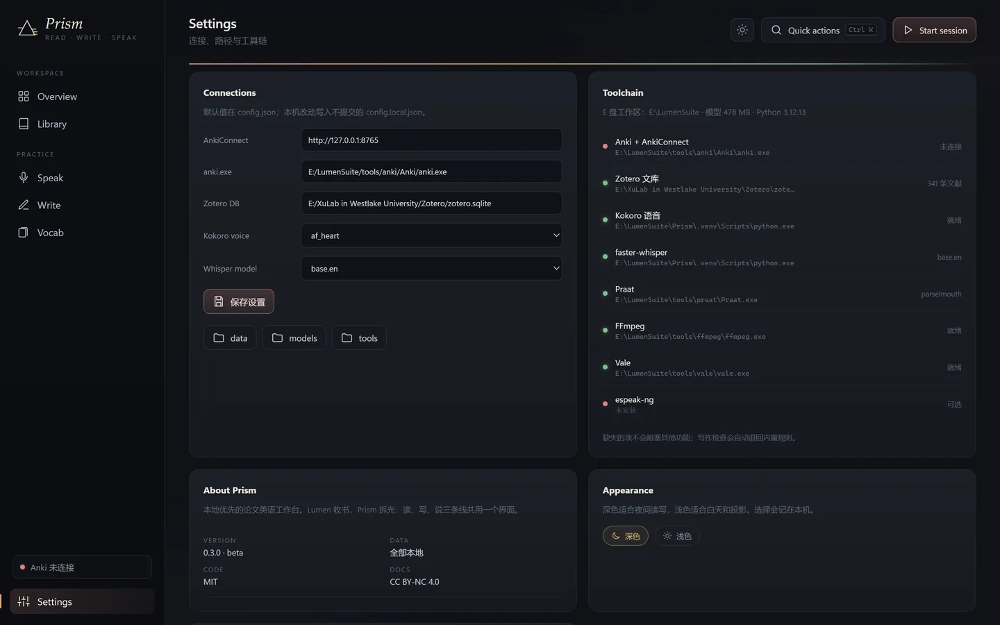
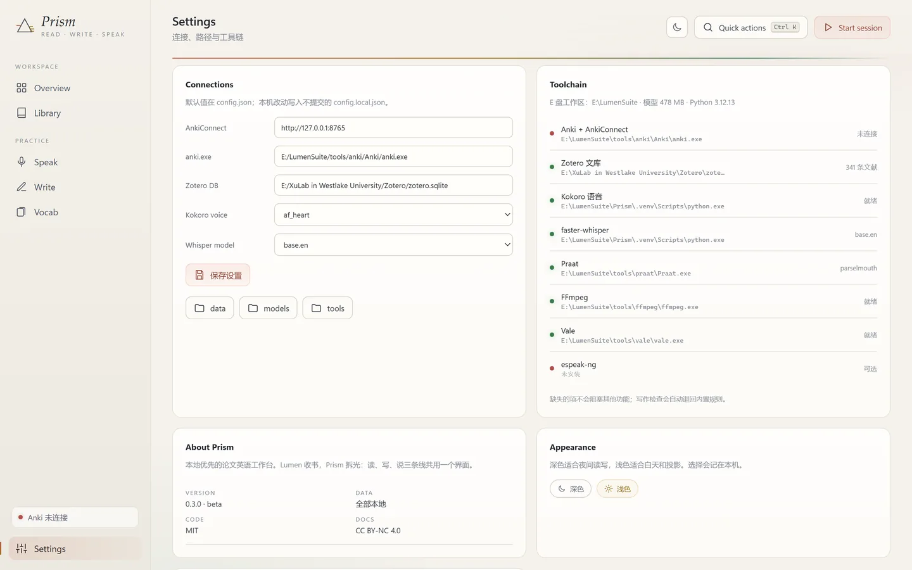
改端口、Anki 与 Zotero 路径、音色与模型；每个外部工具显示真实路径与状态；深色 / 浅色主题在这里切换。
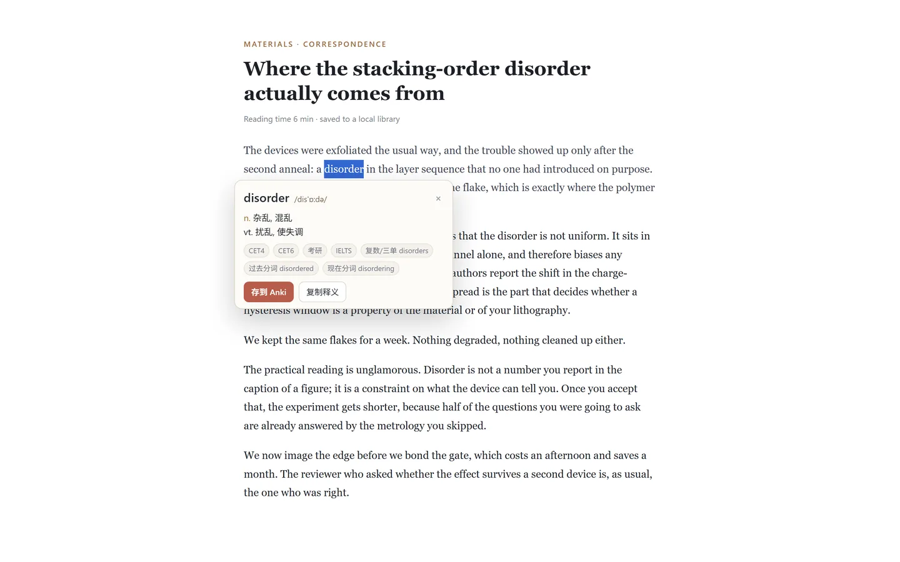
自带一个 4 个文件的 MV3 扩展：划中单词，释义来自本机 77 万词条的 ECDICT 索引，不查任何在线服务。Prism 没开时先存在扩展里，启动后自动补交。
两种主题，随时切换 —— 深色适合夜里，浅色适合白天和投影。
git clone https://github.com/Lumenhao/Prism.git，或在 GitHub 点 Code → Download ZIP 解压。
Prism.bat第一次会自动建虚拟环境、装 CPU 版依赖（约 1.5 GB，5–15 分钟），装完直接打开工作台。之后每次启动只要几秒。
Zotero：Settings 里填 zotero.sqlite 路径。Anki：装好 AnkiConnect 并启动 Anki，然后在 Vocab → 初始化牌组。
Vocab 页点 安装本地词典（约 66 MB，只装一次），再到 chrome://extensions 开开发者模式、加载 Prism\extension 文件夹。之后在任何网页划中单词就能看到释义，点「存到 Anki」进收件箱。
安装位置统一收在一处，方便整体删除：
E:\LumenSuite ├─ Prism\ 代码、.venv、data（录音 / 报告 / 快照 / 划词） ├─ models\ Kokoro、Whisper、ECDICT 词典、HuggingFace 缓存 ├─ tools\ Python 3.12、Anki、Vale、FFmpeg └─ cache\ uv / pip 下载缓存
没有 E 盘时自动改用 %LOCALAPPDATA%\LumenSuite，也可以用环境变量 LUMEN_SUITE 指定。
不会。Zotero 走只读快照，Anki 走本机 127.0.0.1:8765；模型下载是唯一的联网步骤，练习数据只写本地 data/。
不是。连接只取决于三件事：Anki 正在运行、AnkiConnect 已安装并启用、端口是 8765。牌组统一叫 Prism::Vocab / Prism::Phrases / Prism::Listening；旧的 PaperToTalk::* 牌组会在初始化时自动迁移卡片。
可以。Speak 与 Write 不依赖它们；Library 需要 Zotero 数据库，Vocab 需要 Anki。缺哪个，对应页面会给提示，其余功能照常。
不会。扩展的权限里只有一个 http://127.0.0.1:7317/*，除了你划中的那几个字符和当前网址，什么都不读；词典是本机 SQLite，不查任何在线服务。Prism 没开时，词先存在扩展自己的存储里，下次启动自动补交，也可以随时在扩展弹窗里清空。
Kokoro 约 330 MB、Whisper base.en 约 150 MB，默认走 hf-mirror.com，落在 E:\LumenSuite\models，之后离线可用。
后端是 FastAPI + 静态前端，理论上可跑；目前只在 Windows 上验证过启动脚本与桌面窗口。其他系统可手动安装依赖后运行 python -m uvicorn app.server:APP --port 7317。
删掉仓库目录，再删 E:\LumenSuite（或你设置的 LUMEN_SUITE）。Anki 里导出的卡片在 Anki 内删除。
Windows 10/11 x64 · Python 3.12 · 代码 MIT，文档 CC BY-NC 4.0